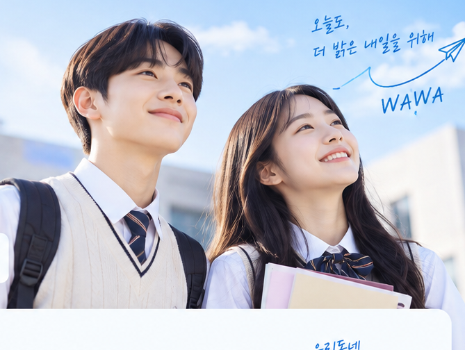

WAWA 가경점
가경점 와와학습코칭
충북 청주시 흥덕구 서현북로 18 2층 와와학습코칭학원
주요 과목 국어 · 영어 · 수학 · 사회
인근 학교 서현초, 서경초 · 서현중, 경덕중, 서현중 · 사대부고, 서원고, 청주외고
초등 전과목관리(+독서활동)가능 중등 국영수사과 관리 가능 고등 영수 외에 입시상담가능
상담 문의 →SMALL CLASS, BIG CHANGE
같은 시간, 더 큰 변화가 시작됩니다.
학생 한 명 한 명의 가능성을 끝까지 함께합니다.

가까운 학원(센터) 방문을 희망하시면 지역을 검색해 주세요.
충북 청주시 흥덕구 서현북로 18 2층 와와학습코칭학원
주요 과목 국어 · 영어 · 수학 · 사회
인근 학교 서현초, 서경초 · 서현중, 경덕중, 서현중 · 사대부고, 서원고, 청주외고
초등 전과목관리(+독서활동)가능 중등 국영수사과 관리 가능 고등 영수 외에 입시상담가능
상담 문의 →서울 서대문구 가재울로 52 승우빌딩 301호
주요 과목 국어 · 영어 · 수학 · 과학 · 사회
인근 학교 가재울초, 연가초 · 가재울고
상담 문의 →경기 구리시 갈매중앙로 79 에스엠타워 602호
주요 과목 국어 · 영어 · 수학 · 과학 · 사회
인근 학교 갈매초, 산마루초 · 갈매중 · 갈매고
1대1밀착관리-학부모님께 회원피드백 수업직후 상시제공, 갈매중고 내신특화, 전과목관리가능
상담 문의 →경기도 이천시 갈산동 영창로 314 629-2외 2필지 주공프라자 504호
주요 과목 국어 · 영어 · 수학 · 사회
인근 학교 안흥초, 설봉초 · 이천중, 설봉중, 증포중 · 제일고, 이현고
상담 문의 →강원특별자치도 강릉시 정원로 44 202호 와와학습코칭학원
주요 과목 영어 · 수학
인근 학교 율곡초, 경포초 · 관동중, 율곡중, 해람중, 솔올중, 경포중 · 강여고, 강일여고, 명륜고, 제일고, 강릉고
시험기간 자습반 운영 및 수업과목별 기출문제 보유. 시험기간 간식제공. 기본 상비약 구비. 시내에서 도보 7분거리 현재 소수정예로 지도 가능합니다. 새로 셋팅하여 환경이 깔끔합니다. 주위 유해시설 없습니다. 코치들이 상냥합니다. 하위권 성적 올린 사례 많습니다.
상담 문의 →충청북도 청주시 서원구 개신동 경신로 31-1 402호
주요 과목 국어 · 영어 · 수학
인근 학교 개신초, 서경초, 가경초, 죽림초, 서원초 · 가경중, 서경중, 경덕중, 사대부중, 성화중, 서원중 · 서원고, 사대부고, 청주고, 중앙여고, 운호고, 봉명고, 흥덕고, 세광고
-. 주변 학교에 대한 풍부한 데이터확보로 타겟 관리 가능 (서경중,사대부중,가경중/ 서원고,사대부고/ 내신이 필요한 청주공고,충북공고,청주여상) -. 평일~일요일까지 수업 오픈으로 최대한 학생별 맞춤 시간표 관리 가능. -. 초등~ 고3 수능준비까지 가능한 강사진. -. 전국 와와에서 회원 유지개월수가 높은 지점.
상담 문의 →경남 거제시 수양로 462 3층
주요 과목 영어 · 수학
인근 학교 수월초, 제산초 · 수월중, 거제중앙중 · 거제중앙고, 연초고, 상문고
고등 회원이 많아서 면학분위기가 아주 잘 형성 되어져 있어서 초중등 부모님들께서 만족해 하십니다. 고등까지 전부 수업이 가능한 강사들로 이루어져 있어서 교수법이 뛰어납니다.
상담 문의 →경기 안산시 단원구 광덕대로 130 폴리타운 B동 513호
주요 과목 국어 · 영어 · 수학
인근 학교 센터별 상담
현재 수업 배치불가 베테랑 교사진 기본시스템 잘 활용
상담 문의 →대전 서구 구봉로 133 1542번지 205호
주요 과목 국어 · 영어 · 수학 · 과학 · 사회
인근 학교 서일고, 서일여고
초등회원 <10분독서>로 수업 시작. 한 과목 두명의 강사가 관리. 매 수업 시간 학습일지 작성.
상담 문의 →대전 유성구 관평2로 46 밸리타운 501
주요 과목 국어 · 영어 · 수학
인근 학교 동화초, 관평초 · 동화중, 관평중 · 중일고, 용산고
초등부 관리가 잘 되는 센터 / 분기별 이벤트가 있고, 초등부 매월 평가서가 있는 센터 / 밝은 분위기의 딱딱하지 않은 센터 / 회원관리 및 상담관리가 잘 되는 센터
상담 문의 →경기 광명시 광명로 823 광명현대타운 7층 701호
주요 과목 국어 · 영어 · 수학
인근 학교 광남중, 광문중 · 광문고
상담 문의 →서울 광진구 광나루로 584 동서울빌딩 5
주요 과목 국어 · 영어 · 수학 · 과학
인근 학교 양진중, 광장중 · 광남고, 단대부고, 건대부고
1. 배치 즉시 당일 상담 날짜 세팅 2. 영수 경력10년이상 코치들 구성 3. 따뜻하고 재미있는 분위기 4. 플래너 관리 5. 방학특강, 시험대비특강으로 부족한 부분 추가지도 6. 학부모와의 적극적인 소통
상담 문의 →경기 파주시 청석로 272 센타프라자1 제8층 제803
주요 과목 수학 · 과학
인근 학교 청석초, 석곶초, 두일초 · 교하중, 두일중, 심학중 · 교하고, 심학고
모든회원 - 플래너작성 , 단체카톡방, 빠른소통(출결/특이사항) , 국영수과 수업
상담 문의 →서울특별시 은평구 역촌동 연서로 130 4층
주요 과목 국어 · 영어 · 수학
인근 학교 구산중, 은평중 · 예일여중고, 선일여중고
상담 문의 →인천 남동구 선수촌공원로23번길 6-29 다복타워 401호 와와학습코칭학원
주요 과목 국어 · 영어 · 수학 · 과학 · 사회
인근 학교 성리초 · 성리중
정돈된 학습환경 학습계획을 관리하는 학원 학생들의 소리에 귀 기울이는 학원 청소년 코칭 전문가
상담 문의 →경기 파주시 금빛로 24-27 제일메디컬 502
주요 과목 국어 · 영어 · 수학 · 과학 · 사회
인근 학교 금릉초, 금화초, 새금초, 금촌초 · 금릉중, 금촌중, 문산중 · 금촌고, 문산제일고
첫상담부터 정착까지 센터장 밀착관리/학생별 단톡방운영/매월정기고사/연2회 코칭데이/중2이상 지필대비 주말자습운영
상담 문의 →서울 금천구 금하로 763 벽산아파트 제중심상가동 3층 306-2,307,308
주요 과목 국어 · 영어 · 수학 · 과학 · 사회
인근 학교 탑동초 · 동일중, 세일중 · 매그넷고, 동일여고, 금천고, 문일고
국,영,수 초등부터 고3(이과)까지 가능/경력이 탁월한 강사들의 강의력
상담 문의 →경기 용인시 기흥구 구갈로60번길 15 경영빌딩 3층 와와학습코칭학원
주요 과목 국어 · 영어 · 수학
인근 학교 구갈초, 산양초, 관곡초 · 구갈중, 신갈중, 신릉중 · 기흥고, 신갈고, 성지고
편안한 수업 분위기/ 강사 소통이 빠름/ 유지율이 높음
상담 문의 →울산 중구 남외3길 15 남외프라자 401호
주요 과목 국어 · 영어 · 수학
인근 학교 남외초 · 남외중,울산중 · 울산고,가온고
남외중 내신대비에 강점인 센터이며 모의평가로 내신대비 적중률과 시험치는 분위기형성으로 상위권학생들이 많이 분포되어있고 시험기간에 국,영,수수업듣고있는 아이들에 한정해서 타과목특강이 있습니다~ 남외초학생들이 걸어오기좋은 거리에 남외초만을 위한형성평가대비및 코칭데이를통한 아이들학습습관과 기초부터심화까지 눈높이에 맞춘수업이가능합니다
상담 문의 →서울 강서구 마곡중앙4로 74 이웰메디파크 제4층 401,402호
주요 과목 국어 · 영어 · 수학 · 과학 · 사회
인근 학교 가곡초등학교 공진초등학교 · 등명중학교, 마곡하늬중학교,명덕여중,수명중 · 수명고, 광영고, 명덕여자고등학교,화곡고
대형학원에서 하기 힘든 개별 관리와 학습코칭 주1회, 필요시는 일대일 수업까지 병행해서 학생에게 최적화된 수업방식을 선택할수 있습니다. 내신대비와 수행평가 뿐 아니라 수능대비까지 가능합니다. 집중학교 : 등명중학교, 명덕여자중학교, 마곡하늬중학교, 수명중학교, 화곡중학교 // 수명고, 광영고, 화곡고, 명덕여자고등학교 (참고 명덕외고, 특성화고, 기타 너무 먼 학교는 관리 어렵습니다.)
상담 문의 →제주시 과원북4길 27, 2층(노형동)
주요 과목 영어 · 수학
인근 학교 노형초 · 서중, 중앙중 · 지역내 모든 고등학교 가능
상담 문의 →인천 남동구 청능대로 559 2
주요 과목 국어 · 영어 · 수학
인근 학교 동방초, 원동초 · 고잔중 · 고잔고
상담 문의 →경기 남양주시 도농로 29 604호 와와학습코칭센터
주요 과목 국어 · 영어 · 수학 · 과학 · 사회
인근 학교 도농초, 금교초, 미금초, · 동화중, 도농중, 가운중 · 도농고, 가운고, 다산고
월정기평가를 매월 봅니다. 보고나면 보고서 및 코칭평가서를 제공합니다 코칭 데이 및 입시설명회 특강을 통해서 학생들의 부족한 점을 매월분석하여 보완을 합니다. 학부모 학습방을 통해서 수업에 대한 일정을 공유하며 숙제와 부족한 공부는 30분꼭 남겨서 완벽학습을 하며 시험기간에는 1시부터 자습을 통해서 시험대비에 대한 4주 준비를 미리하고있습니다
상담 문의 →경기 남양주시 다산중앙로146번길 12-14 다산메트로타워 604호
주요 과목 국어 · 영어 · 사회
인근 학교 다산초 · 다산중 · 다산고, 도농고
상담 문의 →경기 남양주시 다산순환로 350 KB골든타워 310호 더블유플러스학원
주요 과목 수학 · 과학
인근 학교 센터별 상담
상담 문의 →경기 남양주시 다산지금로 139 3층 308호, 309호
주요 과목 국어 · 영어 · 수학 · 과학 · 사회
인근 학교 다산한강초 · 다산한강중
상담 문의 →강원특별자치도 원주시 서원대로 406 리더스빌딩 402
주요 과목 국어 · 영어 · 수학 · 과학 · 사회
인근 학교 구곡초등학교, 서원주초등학교 · 남원주중학교, 단구중학교 · 치악고등학교, 원주고등학교
국,영,수,사,과 종합적인 관리가 가능한 센터
상담 문의 →경기 성남시 수정구 산성대로 423 5층
주요 과목 국어 · 영어 · 수학
인근 학교 단대초 · 서중, 은행중 · 성남고, 성일고, 숭신여고, 동광고
상담 문의 →서울 영등포구 당산로44길 3 삼성타운 504
주요 과목 국어 · 영어 · 수학
인근 학교 당서초, 영동초, 당중초 · 당산중, 당산서중, 선유중 · 선유고, 여의도고, 여의도여고, 영등포여고, 관악고
상담 문의 →충남 당진시 당진중앙2로 211-5 효명프라자 404호
주요 과목 국어 · 영어 · 수학 · 과학 · 사회
인근 학교 탑동초 · 호서중, 당진중 · 호서고, 당진고
상담 문의 →대구 북구 도남중앙로7길 20-3 위너프라자 402호 와와학습코칭학원
주요 과목 국어 · 영어 · 수학 · 과학 · 사회
인근 학교 도남초, 국우초 · 학남중 강북중 · 학남고, 구암고, 강북고
수업 시간내 타켓 학교 수행평가 대비 학교 유인물 빠른 분석 및 수업시간 바로 적용, 4주이상 주말 시험대비 특별 보강 및 영어 듣기 평가 대비 특강 주말 진행 , 국영수사과 초중고 모든 과목 일대일 전문 강사 수업 가능, 주말 활용 일대일 방문 수업 병행 가능
상담 문의 →대구 중구 서성로 99 대구역센트럴자이 상가 302호 와와학습코칭학원
주요 과목 국어 · 영어 · 수학 · 과학 · 사회
인근 학교 수창초, 달성초, 종로초 · 계성중, 성명여중, 사대부중 · 사대부고, 경북여고, 신명고, 대구고, 경북예고, 칠성고
매 수업 후 수업 소통방에 피드백과 수업진행사항 공유 두달 마다 정기고사 후 성취보고서 공유 정기적 입시설명회, 코칭데이 진행
상담 문의 →대구 중구 서성로 99 대구역센트럴자이 상가 203호 와와학습코칭학원
주요 과목 국어 · 영어 · 수학 · 과학 · 사회
인근 학교 수창초, 종로초 · 계성중, 성명여중, 대구제일중, 사대부중 · 사대부고, 경북여고, 신명고, 칠성고
일대일 맞춤 개별 지도, 수행평가대비, 시험대비4주이상 주말 특별보강, 정기고사 진행, 개별 6개월 플랜, 성취보고서 제공
상담 문의 →대구 달서구 장기로 252 장기협성휴포레 2층 209,210
주요 과목 국어 · 영어 · 수학 · 과학 · 사회
인근 학교 장동초, 장기초, 성당초 · 원화중
1. 주기적인 유무선 상담 2. 철저한 수행&내신 관리 3. 입시 상담 가능
상담 문의 →경기 고양시 일산서구 하이파크2로 40 금문프라자 804호
주요 과목 국어 · 영어 · 수학 · 과학
인근 학교 한산초, 덕이초, 백송초
친절하고 실력있는 강사진/대부분 10년 전후 경력
상담 문의 →대전 서구 동서대로 692 에프엠프라임 1차 501
주요 과목 영어 · 수학 · 과학
인근 학교 흥도초 · 유성중, 봉명중, 도안중 · 유성고, 도안고, 서대전여고
상담 문의 →서울특별시 성북구 돈암동 동소문로 190 중앙빌딩 201호
주요 과목 국어 · 영어 · 수학
인근 학교 개운초 · 개운중, 성신여중, 고명중 · 용문고, 사대부고, 성신여고, 고대부고
1. 국영수 전강사 선임강사 이상, 회사입사 경력 10년이상된 베테랑 코치들 2. 고타임 회원관리 능력과 상담력 우수한 코치들로 구성 3. 성북구 돈암점 근처 학교 티칭 경력이 10년이상, 근처 학교 기출및 내신경향 파악 잘되어있음
상담 문의 →부산광역시 동래구 온천동 충렬대로 129-1 한야빌딩 3
주요 과목 국어 · 영어 · 수학 · 과학
인근 학교 내산초 · 내성중,유락여중,동래중,동해중 · 내성고,중앙여고,동래고,부산전자고
영어,수학,과학 전공자들로 뛰어난 교수법의 경험 많은 강사진/정기고사/시험대비 주말보강/시험관리/입시상담
상담 문의 →경기도 용인시 기흥구 중동 동백3로11번길 3 2층 201호
주요 과목 국어 · 영어 · 수학 · 과학
인근 학교 석성초, 초당초 · 초당중, 백현중, 동백중, 성지중, 어정중, 용인중 · 초당고, 백현고, 동백고, 성지고, 용인고
와와학습코칭센터 동백점은 초3~고3까지 국영수과 오랜 경력의 전문 코치들이 학생들을 안정적으로 지도하고 있는 유지개월수가 8개월 이상 되는 센터 입니다.
상담 문의 →서울 성북구 아리랑로7길 5 4층 와와학습코칭학원
주요 과목 영어 · 수학
인근 학교 정덕초, 우촌초, 정수초 · 성신여중, 동구여중, 삼선중, 고명중 · 성신여고, 홍대부고, 고대부고, 한성여고
1. 자기주도학습의 A~Z 까지 완벽히 알려드립니다. 2. 장기근무 강사들의 지역내신 전문성을 보여드립니다. 3. 입시에 능통한 실력있는 강사들의 장기 로드맵으로 초등에서 대입까지 연계학습합니다.
상담 문의 →인천 연수구 앵고개로264번길 40 남지빌딩 4층 와와학습코칭센터
주요 과목 국어 · 영어 · 수학 · 과학
인근 학교 대건고, 연수여고, 연수고
상담 문의 →경기 화성시 동탄신리천로 408 M메디칼 212호
주요 과목 국어 · 영어 · 수학 · 과학 · 사회
인근 학교 동탄목동초, 한율초 · 동탄목동중, 세정중 · 창의고, 정현고
모든 회원 베테랑 교사 / 학습관리 꼼꼼하게, 소통방 운영, 매 월 평가 및 피드백
상담 문의 →경기 화성시 동탄순환대로 127-19 에스비타운 907호
주요 과목 국어 · 영어 · 수학 · 과학 · 사회
인근 학교 방교초, 서연초 · 청림중, 서연중, 방교중 · 정현고, 서연고, 창의고
상담 문의 →충청남도 천안시 서북구 두정동 봉정로 382 성광빌딩 3층
주요 과목 영어 · 수학
인근 학교 두정초, 신대초 · 두정중, 성성중, 성정중, · 오성고, 두정고, 신당고, 업성고
상담 문의 →경상북도 포항시 북구 용두산길 32 3층
주요 과목 영어 · 수학
인근 학교 환호여중, 대도중 · 두호고, 포여고, 장성고, 포고, 중앙고, 중앙여고, 대동고
시험직전 주말 3-4주 수업/시험 전후 피드백/장기회원 다수/회원유지율 9개월이상
상담 문의 →대전광역시 서구 둔산동 둔산로 142 신화빌딩 401호
주요 과목 국어 · 영어 · 수학 · 사회
인근 학교 센터별 상담
다양한 스타일의 단어암기법. 나만의 문법책. 학습일지 작성. 매월 정기고사 후 우수자 시상과 게시
상담 문의 →대전 서구 둔산로 130 803호
주요 과목 수학 · 과학
인근 학교 센터별 상담
매 수업마다 오답노트.개념노트.학습일지 작성, AI정기고사&분석리포트
상담 문의 →인천 서구 새오개로111번안길 23 대릉빌딩 302호
주요 과목 국어 · 영어 · 수학
인근 학교 가현초 · 신형중, 신현여중, 가현중 · 신현고
상담 문의 →경기 고양시 일산동구 중앙로 1191 굿모닝법조타운 1 604호
주요 과목 국어 · 영어 · 수학 · 과학 · 사회
인근 학교 백신초, 호수초, 낙민초 · 백석중, 백신중 · 백신고, 정발고
매월 초등 중등 정기고사 실시, 정기고사 시험 분석지 매달 전송, 원장이 연락이 잘됨.
상담 문의 →서울 마포구 토정로 252 승지빌딩 3층
주요 과목 국어 · 영어 · 수학 · 사회
인근 학교 신석초, 염리초, 용강초, 서강초, 우이초 · 서울여중, 동도중, 신수중 · 서울여고, 숭문고, 광성고, 한성고, 배문고
친절하고 학부모님들의 만족도가 높은 센터이며 2023 학부모님이 뽑은 최우수 강사가 있는 센터입니다. 초등부터 고3까지 영어와 수학(확통/기하/미적분) 모두 수업이 가능합니다. 초등은 국어도 가능합니다. 개념정리노트와 오답노트 활용을 잘 하고 있습니다. 면학 분위기가 굉장히 좋고 학생수가 현재 많지 않아서 수업의 질이 매우 높은 편입니다. 장기 회원이 많고 학부모님들과 소통이 잘 되며 유지개월 수가 높은 센터입니다.
상담 문의 →서울특별시 마포구 염리동 독막로42길 7 173-3 2층
주요 과목 국어 · 영어 · 수학 · 과학 · 사회
인근 학교 염리초 · 서울여중, 동도중, 신수중, 숭문중 · 서울여고, 숭문고, 광성고
상담 문의 →경기도 수원시 영통구 망포동 영통로 127 센터프라자 401호
주요 과목 국어 · 영어 · 수학 · 과학 · 사회
인근 학교 잠원초, 망포초, 대선초 · 영동중, 잠원중, 망포중, 동학중 · 태장고, 망포고
상담 문의 →서울 강동구 양재대로 1606 3층
주요 과목 국어 · 영어 · 수학
인근 학교 천호중, 배재중, 명일중 · 명일여고, 강동고, 광문고
상담 문의 →경기 용인시 처인구 명지로40번길 4 링크 153 502호 와와학습코칭학원
주요 과목 영어 · 수학
인근 학교 함박초, 서룡초 · 용신중, 용인중
상담 문의 →경기 시흥시 수풀안길 14-23 4층 402호
주요 과목 국어 · 영어 · 수학 · 과학 · 사회
인근 학교 조남초, 목감초 · 조남중 · 목감고
국영수과 전과목이 가능
상담 문의 →서울 양천구 목동동로8길 23 메리트윈 3층 305
주요 과목 국어 · 영어 · 수학 · 과학 · 사회
인근 학교 신목초, 서정초 · 목일중, 신목중, 양강중, 금옥중 · 양천고, 신목고, 한광고, 서울영상고
상담 문의 →경기도 성남시 분당구 금곡동 돌마로 87 골드프라자 402호
주요 과목 영어 · 수학
인근 학교 미금초, 청솔초, 늘푸른초 · 불곡중, 청솔중, 늘푸른중 · 불곡고, 늘푸른고, 분당중앙고
높은 회원유지율/ 공부하는 분위기의 학원/ 수업회원 만족도 높음/ 강사들 소통이 빠름
상담 문의 →경기 하남시 미사강변대로 212 미사센트럴프라자 309
주요 과목 국어 · 영어 · 수학 · 과학
인근 학교 센터별 상담
플래너관리/학생별 학습코칭 다양/친절한 강사진/단톡방 관리 활성화
상담 문의 →경기 부천시 원미구 상일로 69 반달마을 제상가동 제 3층 제 304호 와와학습코칭학원
주요 과목 국어 · 영어 · 수학 · 과학
인근 학교 부인초, 상도초 · 부인중, 상동중 · 상원고
모든 회원 플래너 작성, 학습카톡방 관리, 매월 학습진행 리포트 공유
상담 문의 →대전 유성구 지족로 282 코오롱타워2 303,304
주요 과목 국어 · 영어 · 수학
인근 학교 새미래초, 반석초 · 새미래중, 외삼중, 하기중 · 반석고, 노은고, 지족고, 유성고
학생의 강점을 찾아주는 수업 방식 학생 뿐만 아니라 학부모님과의 소통이 밀접하게 이루어지는 관리 태도의 성장을 만들어 냄으로서 장기적인 학습 강점을 빌드업 해주는 학원
상담 문의 →경기도 화성시 반송동 동탄원천로 163 503호
주요 과목 국어 · 영어 · 수학 · 과학 · 사회
인근 학교 센터별 상담
상담 문의 →부산 해운대구 반여로 102 경성빌딩 501호
주요 과목 국어 · 영어 · 수학 · 과학
인근 학교 인지초, 장산초, 무정초 · 장산중, 인지중 · 반여고
1. 학생별 월 학습 계획에 따라 학습이 이루어 지고, 매주 진행상황에 따라 과목 선생님께서 주차별 코멘트를 작성해서 학생,학부모로 이루어진 단톡방에 공유합니다. 2. 과목 수업 학습 일지를 학생 스스로 작성하여 매일 학습양을 점검하고, 배운내용에 대해 개념 또는 오답노트를 작성하도록 합니다. 3. 학생 상황과 개별성에 맞게 수행평가 대비를 합니다.
상담 문의 →대구 중구 대봉로 253 3층 와와학습코칭학원
주요 과목 국어 · 영어 · 수학 · 과학 · 사회
인근 학교 대구초, 사대부초 · 대구제일중, 사대부중 · 사대부고, 경북여고
초중고 내신&입시&모든코치내방공부9도 코칭 가능 매 수업 후 수업 소통방에 피드백과 수업진행사항 공유 두달 마다 정기고사 후 성취보고서 공유 정기적 입시설명회, 코칭데이 진행
상담 문의 →경기 시흥시 배곧4로 22 배곧타운2 217호 와와학습코칭학원
주요 과목 국어 · 영어 · 수학 · 과학 · 사회
인근 학교 센터별 상담
상담 문의 →경기 부천시 소사구 은성로 132 5층
주요 과목 국어 · 영어 · 수학 · 과학 · 사회
인근 학교 창영초, 소안초, 소사초, 복사초 · 일신중, 소사중, 부일중 · 시온고, 소사고, 범박고
sky 출신 강사들, 수학 국어 등 전공자 직강, 코칭 및 입시 전문가로 구성
상담 문의 →경기 남양주시 덕송1로55번길 20 503호
주요 과목 국어 · 영어 · 수학 · 과학 · 사회
인근 학교 덕송초, 샛별초 · 별가람중, 화접중, 한별중 · 별내고, 별가람고
꼼꼼한 테스트 진행으로 학생의 현위치 파악을 잘합니다. 매월 테스트를 통해 수업의 속도 및 내용에 대한 점검을 개인별로 디테일하게 해줍니다. 잦은 학부모 소통으로 학부모님들의 신뢰가 두텁습니다. 강사들간의 단합이 잘되고 사이가 좋아 아이들이 학원에서 편안함을 느낍니다.
상담 문의 →경기 남양주시 순화궁로 349 삼광프라자 501호
주요 과목 국어 · 영어 · 수학 · 과학
인근 학교 샛별초, 화접초, 별가람초, 한별초, 덕송초 · 별가람중, 한별중, 한삼중 · 별가람고, 별내고, 한삼고, 퇴계원고, 청학고
상담 문의 →경기도 남양주시 별내3로 66,401호
주요 과목 영어 · 수학 · 과학
인근 학교 한별초 · 화접중, 한별중 · 별내고
4인 원장 체제로 전문성 있는 집중 관리로 고객 만족도 up!
상담 문의 →경기 화성시 병점1로 221 화인메디컬프라자 2층 203호
주요 과목 국어 · 영어 · 수학 · 과학 · 사회
인근 학교 안화초, 진안초, 태안초, 병점초 · 안화중, 진안중, 병점중, 반월중 · 안화고, 병점고, 반월고, 능동고
1. 처음 학습 시작하는 학생들이나, 진도가 많이 뒤쳐졌거나, 내향적인 학생들도 원하는 성장을 할 수 있는 교사진과 센터 분위기 2. 개별 학습 수준에 맞춘 AI 교재 및 학습량 설정, 개별 학습자료 제공으로 실제적 학업 향상 3. 안화중 병점중 진안중 반월중 기산중 맞춤 수행평가 관리와 시험 대비 4. 초등 전과목 맞춤 관리 가능 5. 학부모님과 과목 전체 교사진의 단톡방 운영 및 개별 관리
상담 문의 →경기 용인시 기흥구 사은로126번길 6 신원프라자 303호
주요 과목 국어 · 영어 · 수학 · 과학
인근 학교 나곡초 · 나곡중/보라중/상갈중 · 보라고/신갈고
입시 기반 상담 및 커리큘럼 운용 학생 1대1 상담/관리/수업 매 수업마다 수업내용 발송 / 월1회 원장상담
상담 문의 →충북 청주시 흥덕구 진재로 37 3
주요 과목 국어 · 영어 · 수학 · 과학
인근 학교 증안초, 진흥초 · 복대중, 서원중, 솔밭중 · 흥덕고, 세광고, 사대부고, 청주고, 중앙여고
수행평가 및 생기부관리를 통한 입시코칭 가능한 센터 관련학과 출신의 전문 선생님들이 학생 수준별 맞춤수업
상담 문의 →울산 중구 번영로 461 B2동 7
주요 과목 국어 · 영어 · 수학 · 과학 · 사회
인근 학교 센터별 상담
상담 문의 →대구 북구 동북로 247 이편한세상복현 상가동 305호 와와학습코칭학원
주요 과목 국어 · 영어 · 수학
인근 학교 복현초 · 북중, 성광중, 산격중 · 경상고, 성광고, 영진고
경력 10년 이상 강사/ 플래너관리/회원별 수업소통방/ 데일리숙제관리
상담 문의 →경기 화성시 봉담읍 상리중심상가길 28-8 713호 와와학습코칭학원
주요 과목 국어 · 영어 · 수학 · 과학 · 사회
인근 학교 센터별 상담
상담 문의 →경기 이천시 부발읍 경충대로2092번길 39-19 이천하이클래스 207,208
주요 과목 국어 · 영어 · 수학 · 과학 · 사회
인근 학교 아미초, 신하초 · 효양중, 사동중, 대월중 · 효양고, 제일고
상담 문의 →인천광역시 부평구 부평동 부흥로 264 5층 와와학습코칭센터
주요 과목 국어 · 영어 · 수학 · 과학 · 사회
인근 학교 부평서초,부평동초 · 부원중,부원여중 · 부평고, 부평여고
전과목관리(국영수사과),회원별 강사소통방 운영,매월 수업보고서 전송
상담 문의 →충남 천안시 서북구 불당33길 22 고은타워 805호
주요 과목 국어 · 영어 · 수학
인근 학교 센터별 상담
강사들의 일대일 밀착관리력 불무중, 불당중.불당고 특화 수업
상담 문의 →경기 안양시 동안구 관악대로 91 대림타워 1102호 와와학습코칭학원
주요 과목 국어 · 영어 · 수학
인근 학교 중앙초 · 비산중, 부흥중, 부림중, 신성중 · 양명여고, 양명고, 관양고, 성문고, 동안고
상담 문의 →경기도 평택시 비전동 평남로 937 폴리프라자 602호, 603호
주요 과목 국어 · 영어 · 수학 · 과학
인근 학교 이화초 가내초 자란초 · 비전중 한광중 한광여중 평택여중 소사벌중 · 비전고 한광고 한광여고 평택여고
초등회원 영어수학전문 (국어는 불가) 중등회원 영어수학국어과학 가능 고등회원 영어수학 가능
상담 문의 →경북 경산시 백자로10길 1 402호 와와학습코칭학원
주요 과목 국어 · 영어 · 수학 · 과학 · 사회
인근 학교 사동초, 삼성현초, 평산초, 동부초 · 사동중, 문명중, 삼성현중, 경산중, 경산여중, 장산중 · 사동고, 경산여고, 경산고, 문명고, 경북체고
1) 10년차 경산 전지역 및 사동수업 코치 다수 보유 2) 사동 주변 학교별 시험난이도와 유형 파악 가능 3) 경산&대구(수성구포함) 10년이상 코치님들의 코칭 노하우로 여러 유형의 학생들 맞춤 수업과 폭넓은 진학상담 가능 4)프리미엄 코치 부센터장 5)국어교육과 교원자격증 강사 6)고려대학교(서울안암캠퍼스) 졸업강사
상담 문의 →경기 김포시 사우중로 77 삼정사이버프라자 304
주요 과목 국어 · 영어 · 수학 · 과학 · 사회
인근 학교 금파초, 향산초 · 금파중, 김포중 · 사우고, 풍무고, 고촌고
상담 문의 →부산 동래구 사직로 80 222동 311호 (사직쌍용예가아파트 상가)
주요 과목 영어 · 수학
인근 학교 예원초, 사직초 · 사직중, 사직여중 · 사직고, 사직여고, 동인고
영어와 수학 모두 10년 이상의 베테랑 강사로 폭넓은 학생층 관리 가능. 학생들이 오고 싶어하는 학원으로 운영하며, 학부모의 입장에서 믿고 맡길 수 있도록 투명한 회원 관리 및 공유를 하고 있습니다
상담 문의 →충청북도 청주시 서원구 산남동 산남로 18 이화빌딩 5층
주요 과목 국어 · 영어 · 수학 · 과학 · 사회
인근 학교 샛별초 · 수곡중 산남중 · 충북고 운호고 충북여고 산남고
중등은 국영수사과 전과목 가능하고 과학은 고등수업까지가능합니다
상담 문의 →경기 파주시 청암로17번길 21 월드타워5차 405호
주요 과목 국어 · 영어 · 수학
인근 학교 센터별 상담
상담 문의 →경기 군포시 산본로 394 대림프라자 제 6층 제602호 와와학습코칭학원
주요 과목 국어 · 영어 · 수학 · 과학
인근 학교 광정초 · 산본중, 궁내중, 수리중, 도장중, 금정중 · 흥진고, 산본고, 군포고
학습분위기가 잘 잡혀있고 국영수과 한 학원에서 다 할수 있습니다 과목별 전문강사로 운영합니다
상담 문의 →서울 강북구 미아동 811-9 두산위브테라스파크 상가 402/403호
주요 과목 국어 · 영어 · 수학 · 과학 · 사회
인근 학교 길음초, 송천초, 미양초 · 삼각산중, 길음중, 미양중 · 삼각산고, 미양고, 영훈고, 혜화여고
상담 문의 →울산광역시 남구 삼산동 돋질로 300 4층
주요 과목 국어 · 영어 · 수학 · 과학 · 사회
인근 학교 센터별 상담
상담 문의 →경기 고양시 덕양구 신원로 36 명승세도나3 701호
주요 과목 국어 · 영어 · 수학 · 과학 · 사회
인근 학교 신원초 · 신원중 · 신원고
실력,친절,열정의 간부급들 강사들, 학부모학생과 4자단톡방 ,담임제및 월평가서 제출, 성적시상,플래너시상등 이벤트다양
상담 문의 →경남 창원시 성산구 마디미동로 25 비전빌딩 302호
주요 과목 영어 · 수학
인근 학교 외동초 · 상남중, 토월중, 웅남중 · 창원중앙여고, 남고, 신월고, 토월고
AI클래스를 활용한 아이들 맞춤 수업 진행 단톡방을 이용해 플래너 + 학습관리로 학부모와 수업 소통 월말평가, 학습안내문, 정기고사, 시험지분석을 통한 이후 커리큘럼 계획
상담 문의 →경기 부천시 원미구 송내대로265번길 67 월드컵타운 305호 와와학습코칭센터
주요 과목 국어 · 영어 · 수학
인근 학교 석천초 상인초 · 석천중 상동중 상일중 부인중 · 상동고 상일고 상원고 중흥고 중원고
부천시 상동 학원 밀집가 위치 주변 잘알려지 유명학원과 견주어 강사수준 학력좋음 대학교 입학부터 강의를 해서 30대로 젊으면서 연륜이 있는 강사진 학부모와의 상담은 타학원에 견주어 완전 잘하는편 학생 성향에 맞추어 티칭겸 코칭 석천초 중 상일초중 수행 및 성적 향상 관리 학원 이벤트 잘함 간식 자주 ㅋ
상담 문의 →서울특별시 마포구 상암동 상암산로1길 73 202호
주요 과목 영어 · 수학
인근 학교 중동초, 상지초, 상암초 · 상암중, 중암중, 성산중, 성사중, 덕은한강중 · 상암고, 예일여고, 대성고, 숭실고, 가재울고
1. 배치 즉시 당일 상담 날짜 잡음 2. 영수 전문 고3까지 수업이 가능한 전문 강사들로만 구성되어있음 3. 여 강사다 보니 공감능력과 꼼꼼히 관리를 하며 학부모님들과 소통을 잘함. 4. 공부9도는 과목선생님이 아닌 다른 과목선생으로 분리해서 진행하기에 더욱 전문적임. 5. 월 정기고사 시험으로 한달 공부 한 내용들 점검하고 피드백 드림. 6. 내신대비로 타과목 관리 가능 7. 초등학생은 수준별 관리 철저
상담 문의 →경기도 용인시 수지구 상현동 만현로 120 4층 410호 와와학습코칭학원
주요 과목 국어 · 영어 · 수학 · 과학
인근 학교 솔개초, 상현초, 이현초 · 서원중, 소현중, 이현중, 성복중 · 상현고, 서원고, 풍덕고, 이의고, 홍천고
매일 플래너작성을 통한 공부9도관리 안정적인 유지율 시험기간 자체교재 제작 맞춤 시험대비 진행 시험후 시험지 분석 및 오답노트 피드백 정기적으로 정기고사 진행 학부모와 원활한 소통 항상 깔끔한 학원 환경
상담 문의 →세종특별자치시 새롬중앙로 62-15 해피라움W 305호
주요 과목 국어 · 영어 · 수학
인근 학교 새뜸초, 새롬초 · 새뜸중, 새롬중 · 새롬고, 다정고
상담 문의 →경기 수원시 권선구 호매실로104번길 90 JD타워 205호
주요 과목 국어 · 영어 · 수학 · 과학 · 사회
인근 학교 능실초, 금호초 · 오현초호매실중, 능실중, 영신중, 고색중 · 호매실고, 영신여고, 고색고, 율천고, 동우여고
상담 문의 →전북특별자치도 전주시 완산구 서신로 5 4층 와와학습코칭학원
주요 과목 영어 · 수학
인근 학교 중산초 · 한일고, 근영고
학습노트 꼼꼼한 관리로 아이와 학부모 만족율up 전문성 있는 강사진 / 강사 평균 경력 10년 학생의 성격 및 성향 분석하고 수업진행 시험기간 독서실 운영
상담 문의 →경남 창원시 진해구 석동로 51 세븐코아 504호
주요 과목 국어 · 영어 · 수학 · 과학 · 사회
인근 학교 석동중
독서토론
상담 문의 →강원특별자치도 춘천시 지석로 85 703호
주요 과목 센터 문의
인근 학교 성림초, 성원초, 봄내초 · 대룡중, 우석중, 남춘천중, 남춘천여중, 춘천중, 강원중 · 강원고, 사대부고, 춘고, 춘여고, 봉의고, 성수여고, 유봉여고
현재 수업 배치불가
상담 문의 →광주 광산구 선운로20번길 55-1 402호 와와학습코칭학원
주요 과목 영어 · 수학 · 사회
인근 학교 선운초, 본량초 · 선운중 · 정광고, 보문고
플래너 모든 학년 필수 사용(등원,하원시) 숙제 기입까지 단체카톡방을 통한 원활한 소통(지각,결석 여부 빠른 확인) 한국사 수업까지 함께하는 문/이과 무관한 중요과목 관리
상담 문의 →경기 오산시 수청로 193 P&P세교프라자 402호
주요 과목 국어 · 영어 · 수학 · 과학 · 사회
인근 학교 문시중, 세마중 · 세교고
중학생 중간 기말 시험시 90점 이상자가 절반
상담 문의 →경기 하남시 미사강변대로 84 미사탑프라자 601호
주요 과목 국어 · 영어 · 수학
인근 학교 한홀초, 청하초 · 윤슬중, 미사중 · 미사강변고, 미사고, 신장고, 남한고, 풍산고, 강일고, 특성화고
회원유지율 높음/ 한 학생에 대한 과목별 담당 선생님들 회의가 주3회 이상 진행/ 학부모님과 정기적인 소통/회원별 핵심 오답노트 작성/ 와와 강사들 장기근무(강사 자주 안 바뀜)
상담 문의 →경기 광명시 오리로 346 행운드림프라자 4층 405호
주요 과목 영어 · 수학 · 과학
인근 학교 충현초, 서면초 · 충현중, 빛가온중 · 충현고, 광휘고, 소하고
상담 문의 →인천 연수구 해돋이로 165 차오름프라자 302
주요 과목 국어 · 영어 · 수학 · 과학 · 사회
인근 학교 신정초 · 신정중 · 연송고
친절한 선생님, 따뜻한 분위기, 교재 활용을 넘어 학생 맞춤 개별교육자료(프린트) 제공에 강점이 강함
상담 문의 →인천 연수구 해돋이로 160-6 꿈에계단 702호 일부(송도동)
주요 과목 수학 · 과학
인근 학교 신정초 · 신정중 · 연송고
장기 수업코치들로 구성된 전문성 강화, 송도점 전문 강사, 채드윅, 포스코, 국제고, 과학고 가능
상담 문의 →울산 북구 화산로 123 골드테라스 404호
주요 과목 국어 · 영어 · 수학 · 과학
인근 학교 고헌초, 송정초, 화봉초 · 고헌중, 화봉중, 연암중 · 화봉고, 매곡고, 무룡고, 울산공고, 에너지고
학부모, 교사간 단톡방, 정기적인 시험대비 고사, 주기적인 원장쌤과 학부모간 대화
상담 문의 →전북특별자치도 전주시 덕진구 솔내로 129 송천열방빌딩 501호 와와학습코칭학원
주요 과목 국어 · 영어 · 수학 · 과학
인근 학교 센터별 상담
상담 문의 →대전 대덕구 동춘당로94번길 11-7 4층 402
주요 과목 국어 · 영어 · 수학
인근 학교 송촌초 · 매봉중, 법동중, 송촌중 · 송촌고, 명석고, 우송고, 대전여고, 동대전고
상담 문의 →서울 송파구 위례광장로 188 아이온스퀘어 8층 816호 와와학습코칭학원
주요 과목 국어 · 영어 · 수학 · 과학
인근 학교 송례초, 위례별초 · 위례중, 송례중 · 영어 현재 덕수고만 가능합니다. 예체능 및 특성화는 상담후 가능여부 결정.
1대1 맞춤식 수업 (학원과 과외의 병합으로 필요한 수업 셋팅) 시험대비 체계적 플랜 및 방학 체계적 학습관리 공부법 및 입시 상담 수시 진행
상담 문의 →대구 수성구 명덕로 404 1동 404호 와와학습코칭학원
주요 과목 국어 · 영어 · 수학 · 과학 · 사회
인근 학교 동일초, 동도초, 동성초 · 대구동중, 신명여중, 중앙중, 황금중 · 남산고, 경북고
모든 회원 플래너 작성/학부모,학생,코치 모두가 있는 학습관리(카톡방)운영/깨끗하고 쾌적한 환경/1:1 맞춤 클리닉 수업 가능
상담 문의 →대구 수성구 화랑로8길 11-11 7층
주요 과목 국어 · 영어 · 수학 · 과학 · 사회
인근 학교 동중
상담 문의 →광주 광산구 임방울대로 310 아이비타워 406
주요 과목 국어 · 영어 · 수학
인근 학교 수완중, 장덕중 · 수완고, 장덕고
1급 같은 2급 강사가 막내일 정도로 수완점 강사 모두 경험과 좋은 실력을 갖추고 있습니다. 플래너와 학습방 관리를 통해 학생 스스로 학습에 대한 감을 잡고, 누적해갈 수 있도록 지도하고 있습니다.
상담 문의 →경기 용인시 수지구 문정로 13 중수프라자 503호
주요 과목 국어 · 영어 · 수학 · 과학 · 사회
인근 학교 풍천초, 정평초, 이현초 · 이현중, 수지중, 정평중 · 상현고, 신봉고, 홍천고, 성복고, 풍덕고, 수지고, 죽전고
1. 전강사 수석코치 이상 2. 수지고 출신의 원장의 입시관리 3. 전과목 관리 가능 4. 단원평가 시스템 5. 학부모, 학생과의 관계성 6. 전문관에서의 전문 수업 7. 입시상담
상담 문의 →경기 용인시 수지구 풍덕천로 114 3층 글로리드학습코칭학원
주요 과목 국어 · 영어 · 수학 · 과학 · 사회
인근 학교 풍천초, 정평초, 이현초 · 이현중, 수지중, 정평중 · 상현고, 신봉고, 홍천고, 성복고, 풍덕고, 수지고, 죽전고
1. 전강사 수석코치 이상 2. 수지고 출신의 원장의 입시관리 3. 전과목 관리 가능 4. 단원평가 시스템 5. 학부모, 학생과의 관계성 6. 전문관에서의 전문 수업 7. 입시상담
상담 문의 →경기 용인시 수지구 진산로 106 훼미리빌딩 512호,513호,514호
주요 과목 국어 · 영어 · 수학 · 과학 · 사회
인근 학교 이현중, 수지중, 정평중 · 성복고, 풍덕고, 수지고, 죽전고
상담 문의 →경기 성남시 중원구 원터로 95 2층
주요 과목 영어 · 수학
인근 학교 성남중앙초 · 성일중, 성남중, 동광중, 풍생중 · 성남여고, 성남고, 성일고, 동광고, 효성고, 숭신여고, 복정고
아이들의 수준에 맞게 친절하고 꼼꼼하게 잘 설명해주며 각 과목 수행평가 관리도 같이 해줍니다. 내신대비 수능대비 다 강합니다.
상담 문의 →경기 시흥시 은행로167번길 7 크리스탈 빌딩 503호,504호
주요 과목 국어 · 영어 · 수학
인근 학교 은계초, 은행초 · 은행중, 은계중 · 은행고
상담 문의 →경기도 의정부시 신곡동 장곡로 626 금오종합상가 A동 302,303호
주요 과목 국어 · 영어 · 수학 · 과학 · 사회
인근 학교 천보중, 효자중 · 효자고, 경민it고
하위권 성적향상 국어고등교육
상담 문의 →서울특별시 구로구 신도림동 신도림로 20 397-2 해동빌딩 402호
주요 과목 국어 · 영어 · 수학 · 과학
인근 학교 신미림초 · 신도림중 · 신도림고, 구현고
전공자가 수업하는 실력있는 강사 모든강사 10년이상 경력자 8명 이내 소수정원으로 진행 분기별 이벤트로 즐거움을 주는 학원
상담 문의 →충청남도 천안시 동남구 신방동 886 학산프라자 A동 3층 304호,305호
주요 과목 국어 · 영어 · 수학
인근 학교 신용초 · 용곡중, 신방중 · 청수고, 쌍용고, 천안여고
실력좋은 강사들. 학년별.개인별 맞춤 탁월함
상담 문의 →서울 강서구 방화대로 294 마곡더블유타워 505
주요 과목 영어 · 수학 · 사회
인근 학교 송화초, 공항초 · 공항중, 송정중 · 한서고, 공항고
영어, 수학, 사회를 1:1처럼 관리받고 꼼꼼하게 수업을 진행합니다.
상담 문의 →경기 용인시 수지구 신봉2로 60 웰스톤시티엔웰스톤에비뉴 1동 103호 와와학습코칭학원
주요 과목 국어 · 영어 · 수학 · 과학 · 사회
인근 학교 신봉초, 신일초, 홍천초, 신리초, 성복초 · 신봉중, 성복중, 홍천중 · 신봉고, 용인홍천고
#초등 기초부터 고등 입시까지 #국영수과 #단과 #종합 #전 과목 내신 및 수능 집중대비 #내신, 입시 대비 특별반 운영 #매주 (토) 국어특강수업
상담 문의 →대구 달서구 월성동 1848번지 그루타워 702호
주요 과목 국어 · 영어 · 수학 · 과학
인근 학교 조암초, 신월초, 월암초, 월성초 · 조암중, 월암중, 월서중, 효성중, 영남중, 대건중, 학산중 · 영남고, 상원고, 효성여고, 송현여고, 상인고
상담 문의 →경기 부천시 원미구 조마루로291번길 25 센터프라자 405호, 406호
주요 과목 국어 · 영어 · 수학 · 과학
인근 학교 부곡초, 계남초, 심원초 · 심원중, 계남중, 부곡중 · 계남고, 심원고, 원미고
상담 문의 →광주 광산구 신창로 129 상민빌딩 302
주요 과목 영어 · 수학 · 과학
인근 학교 신창초, 수문초 · 진흥중, 신창중, 진흥중 · 숭덕고, 성덕고, 운남고, 장덕고
상담 문의 →충청남도 천안시 서북구 쌍용동 불당대로 260 319호 318호(1/2)
주요 과목 국어 · 영어 · 수학
인근 학교 쌍용초.미라초. · 쌍용중.계광중.월봉중 · 쌍용고.월봉고
상담 문의 →대구 수성구 알파시티2로 19 알파N시티 2층 201호 와와학습코칭학원
주요 과목 국어 · 영어 · 수학 · 과학 · 사회
인근 학교 노변초, 고산초 · 노변중, 고산중 · 시지고, 덕원고
매일 플래너 작성을 통한 관리/ 매월 정기고사 진행 /매월 월평가서 전송 /수업과목별 수행평가 관리/학부모와 지속적인 소통 /시험대비 4주간 일요독서실 진행
상담 문의 →경기 성남시 중원구 양현로 461 4층
주요 과목 국어 · 영어 · 수학 · 과학
인근 학교 여수초, 야탑초, 중탑초 · 야탑중 · 아람고
즐겁게 일한는 강사진, 인근교육기관중 국 영 수 과 고3까지 수업가능한 학원, 코칭에 진심인 강사의 학습코칭 진행
상담 문의 →경북 포항시 북구 천마로 66 환호빌딩 402호
주요 과목 국어 · 영어 · 수학 · 과학 · 사회
인근 학교 양덕초 양서초 장흥초 · 양덕중 장흥중 대도중 환호여중 · 장성고 포고 포여고 유성여고
시험기간 4주 주말클리닉/연5회 정기고사/개별진도
상담 문의 →서울 강서구 양천로67길 15 한희빌딩 2층 202호 와와학습코칭학원
주요 과목 국어 · 영어 · 수학 · 과학
인근 학교 염경초, 염동초, 백석초
고객 필수사항 1. 국: 1차진도 방학 : 문학 비문학- 이해/ 설명 평가문제집 1차풀이 개학: 기출예상문제- 족보 오답 유형별 반복 2. 영: 방학 레벨업 과정 교과서 독해 1차 스토리북2권 4대영역 레벨업: 문법, 단어, 독해, 말하기 개학: 시험 6주 대비반 3. 수: 4회 반복학습 방학 선행 2권(공식,연산위주) 개학 후행 3권+ 1,2권 보완 시험 4주전- 평균점수내기/ 시험 연습
상담 문의 →경기 화성시 동탄순환대로 704 성산에이타워 제4층 제 403호 와와학습코칭학원
주요 과목 영어 · 수학
인근 학교 한백초, 다원초 · 한백중, 다원중 · 한백고, 이산고, 창의고
상담 문의 →경기 수원시 영통구 매탄로108번길 10 모닝프라자 602호
주요 과목 국어 · 영어 · 수학 · 과학 · 사회
인근 학교 매탄초,매현초 · 매탄중,매현중 · 매탄고,효원고
전과목 관리가 가능한 학원 고3까지 영어 수학 뿐만이 아니라 국어와 과학 수업도 전담 교사가 수업이 가능함
상담 문의 →경기도 수원시 영통구 영통동 봉영로 1623 드림피아빌딩 301호, 302호 1/2
주요 과목 국어 · 영어 · 수학 · 과학 · 사회
인근 학교 영덕초 · 흥덕중, 서천중 · 영덕고, 청명고, 태장고, 흥덕고, 서천고
국영수사과 전과목 코칭을 넘어 입시컨설팅까지 완벽하게 케어하는 All Care Class 운영중입니다. 모든 과목 가능합니다 .
상담 문의 →경기 오산시 내삼미로 85 우정프라자 2
주요 과목 국어 · 영어 · 수학 · 과학 · 사회
인근 학교 세미초, 화성초, 수청초 · 매홀중, 세마중, 문시중, 대호중 · 매홀고, 세교고, 오산고, 운천고, 운암고
상담 문의 →경기 오산시 성호대로 121 월드타워 505호
주요 과목 국어 · 영어 · 수학 · 과학 · 사회
인근 학교 운천초, 성호초, 운산초 · 운암중, 운천중, 성호중 · 운암고, 운천고
상담 문의 →경북 구미시 산호대로31길 16 2
주요 과목 국어 · 영어 · 수학 · 과학
인근 학교 동부초 · 해마루중, 옥계중 · 산동고, 오상고, 금오여고
상담 문의 →경기 부천시 소사구 범안로 231-15 옥길중앙타워 제2층 201호 와와학습코칭학원
주요 과목 국어 · 영어 · 수학
인근 학교 센터별 상담
상담 문의 →경기 부천시 소사구 옥길로 116 퀸즈파크 A동 7층 718호~719
주요 과목 국어 · 영어 · 수학 · 사회
인근 학교 버들초 · 옥길중 · 범박고
상담 문의 →경기 양주시 옥정로 218 신운정튼튼프라자 305호 와와학습코칭학원
주요 과목 영어 · 수학
인근 학교 센터별 상담
상담 문의 →경기 용인시 기흥구 동백7로 83 백현마을중앙프라자 제 2층 제 208호
주요 과목 국어 · 영어 · 수학 · 과학 · 사회
인근 학교 동막초, 동백초, 용인백현초 · 동백중, 용인백현중 · 동백고, 용인백현고
4인원장체계 국영수과사 직강 / AI학습클래스 활용 수업관리
상담 문의 →경기 김포시 김포한강11로 288-37 헤리움리버테라스 205호
주요 과목 국어 · 영어 · 수학
인근 학교 하늘빛초, 청수초 · 하늘빛중, 운양중, 푸른솔중 · 제일고, 운양고, 운유고
1. 매 수업 시작 전 플래너 작성 2. 전강사 수석코치 이상 3. 자체교재로 주 1회 초등 인성코칭, 중고등 학습법코칭 진행 4. 단원평가, 모의평가 시스템 5. 학부모, 학생과의 관계성 6. 학교별 커리큘럼 보유
상담 문의 →경기 파주시 동패동 1758-1 삼융프라자2 302호
주요 과목 국어 · 영어 · 수학 · 과학
인근 학교 한가람초
상담 문의 →경기도 파주시 양지로 131, 운정SB타워 509호,510호 (동패동)
주요 과목 국어 · 영어 · 수학 · 과학 · 사회
인근 학교 초롱초 · 심학중 · 심학고
매일 플래너 작성, 정확한 등하원 체크, 핸드폰 관리, AI학습으로 꼼꼼하게 관리, 친절한 선생님들, 성적을 올리는 전문성(수행관리 철저)
상담 문의 →경기 파주시 경의로1240번길 37-1 명품프라자3차 605호
주요 과목 국어 · 영어 · 수학 · 과학 · 사회
인근 학교 센터별 상담
상담 문의 →경기 고양시 덕양구 고양대로1384번길 7-5 서강프라자 502호
주요 과목 국어 · 영어 · 수학 · 과학 · 사회
인근 학교 성라초 성사초 · 화수중 성사중 원당중 · 성사고 화수고
단톡방 개설하고 학부모님에게 매수업 이후 일일 수업 레포트 발송드리고 있고 이 부분이 고객들이 좋아하는 포인트입니다. 시험기간 주말수업4주간 진행하고 있고 고3까지 가능한 선생님들이 과목을 다 가르치고 계십니다.
상담 문의 →강원특별자치도 원주시 시청로 22 2층 201
주요 과목 영어 · 수학 · 과학
인근 학교 만대초, 무실초 · 대성중, 평원중, 원주여중, 남원주중 · 대성고, 육민관고, 북원여고
성적 향상 사례 다수(최하위권에서 중위권 이상으로 사례 다수) 6년차 센터로 관리 노하우 축적 강원도 회원유지율 1위센터
상담 문의 →경기 고양시 덕양구 권율대로 672 원흥역봄오피스텔 217호
주요 과목 국어 · 영어 · 수학
인근 학교 원흥초, 삼송초 · 원흥중, 고양중 · 신원고, 서정고
학습 플래너 관리, 주기적인 상담, 시험대비 주말 운영
상담 문의 →인천 연수구 인천타워대로54번길 15-5 북일프라자 2층 와와학습코칭학원
주요 과목 국어 · 영어 · 수학
인근 학교 해송초등학교 · 해송중학교, 능허대중학교, 박문중학교 · 해송고등학교, 연송고등학교, 대건고등학교
저희센터는 센터인근학교에서만 10년가까이 수업한 센터장과 주변학교 정보를 많이 가지고 있습니다. 또한 근처 대형학원 한군데 제외하고는 소수정예 학원중에 교사들이 전문성을 가장 많이 갖추고 있다고 자부할 수 있습니다.
상담 문의 →경기 성남시 수정구 위례광장로 300 중앙타워 11층 1101-1호
주요 과목 국어 · 영어 · 수학 · 과학
인근 학교 고운초, 위례중앙초, 송례초 · 위례한빛중, 위례중앙중, 송례중 · 위례한빛고, 복정고, 문현고
상담 문의 →경기 성남시 수정구 위례동로 141 우성메디피아 401호
주요 과목 국어 · 영어 · 수학
인근 학교 센터별 상담
상담 문의 →대구 동구 율하동로 32 4층 와와학습코칭센터
주요 과목 국어 · 영어 · 수학 · 과학 · 사회
인근 학교 숙천초, 율원초, 율금초, 안일초 · 율원중, 강동중, 안심중, 새론중, 신기중, 동원중 · 동부고, 강동고, 정동고
매일 플래너작성을 통한 공부9도관리 매일수업시간 시작전 테스트로 학습관리 매월 월평가서 학부모에게 한달관리 내용전달 시험기간 시험집중 플래너로 4주관리로 중간,기말고사 시험대비 시험후 시험지 분석 및 오답노트 피드백 정기적으로 정기고사 진행으로 학업성취도 평가후 평가서 학부모 안내 시험전 4주 주말독서실 운영으로 학교별 기출문제 풀이 센터장이 학부모와 꾸준한 소통 최우수 플래너상 한달에 한번 시상으로 플래너에 진심인 센터 우수 학생 관리로 각종 시상 항상 깔끔한 학원 환경
상담 문의 →서울특별시 은평구 진관동 진관2로 29-21 드림스퀘어 제 8층 804호 805호
주요 과목 영어 · 과학 · 사회
인근 학교 은진초, 은빛초, 진관초, 신도초 · 진관중, 신도중, 연천중 · 진관고, 신도고, 대성고, 선일여고
상담 문의 →서울 은평구 진관2로 29-21 드림스퀘어 609호
주요 과목 국어
인근 학교 센터별 상담
상담 문의 →서울 은평구 진관2로 19 휴먼프라자 312호
주요 과목 수학
인근 학교 진관초, 신도초, 은진초 · 진관중, 신도중, 연천중 · 진관고, 신도고, 대성고, 선일여고, 동명여고
상담 문의 →대구광역시 달서구 이곡동 달구벌대로259길 33 제일빌딩 5층
주요 과목 국어 · 영어 · 수학 · 과학 · 사회
인근 학교 와룡초 · 성산중 · 성서고
1. 초등, 중등 전과목 가능 2. 주간평가서 공유 3. 주기적인 유무선 상담 4. 철저한 수행&내신 관리 5. 입시 상담 가능 6. 월 정기고사 맞춤을 통한 학생의 성취도 평가
상담 문의 →경기도 성남시 분당구 이매동 이매로 49 4층 와와학습코칭센터
주요 과목 국어 · 영어 · 수학 · 과학 · 사회
인근 학교 이매초, 안말초 · 매송중, 이매중, 송림중 · 이매고, 송림고, 태원고, 돌마고
상담 문의 →대구 동구 팔공로51길 33 A-503호 와와학습코칭학원
주요 과목 국어 · 영어 · 수학 · 과학
인근 학교 봉무초, 영신초 · 영신중, 팔공중, 복현중, 성광중, 성화중, 동촌중 · 영신고, 경상고, 영진고, 성광고, 성화여고
국 영 수 과 사 모든과목 수업가능
상담 문의 →경기 평택시 이충로 49-31 삼원프라자 201호
주요 과목 영어 · 수학
인근 학교 효명중, 이충중, 은혜중 · 이충고, 은혜고, 효명고
카톡방 운영 하여 매일 수업 내용과 숙제에 대한 피드백 제공 초등 부터 고3까지 관리
상담 문의 →경기 구리시 건원대로 36 제 407호 와와학습코칭학원
주요 과목 국어 · 영어 · 수학 · 과학 · 사회
인근 학교 건원초, 동구초, 구지초 · 인창중, 동구중 · 인창고, 수택고
매 수업 후 수업 소통방에 피드백과 수업진행사항 공유 두달 마다 정기고사 진행 코칭데이 진행
상담 문의 →인천 부평구 체육관로 32 하이존빌딩 8층 802
주요 과목 국어 · 영어 · 수학 · 과학 · 사회
인근 학교 굴포초, 진산초, 영선초 · 진산중, 삼산중, 구산중 · 영선고, 삼산고
학사일정에 맞춰 개인별 수행평가 대비 및 정기 와와고사 진행 / 단톡방 운영으로 학부모님과 적극 소통 / 국,영,수 종합 학원
상담 문의 →경기 시흥시 진말로 7 중앙프라자 3층 305호, 306호
주요 과목 영어 · 수학 · 과학
인근 학교 장곡초, 진말초 · 응곡중, 장곡중, 가온중 · 장곡고, 능곡고, 시흥고
상담 문의 →경기도 김포시 장기동 김포한강4로 162 한강메트로 503호, 504호
주요 과목 영어 · 수학 · 사회
인근 학교 푸른솔초, 운유초 · 장기중, 푸른솔중, 고창중 · 솔터고, 제일고, 운양고, 통진고
상담 문의 →전북특별자치도 완주군 이서면 출판로 42 제 4층 제 402호 와와학습코칭학원
주요 과목 영어 · 수학 · 과학 · 사회
인근 학교 양현중, 삼우중, 만성중 · 양현고
기존 송천점에서 관리력을 인정 받은 강사진 타과목 관리 가능 전주 고등학교 출신 선배와의 만남 주기적으로 진행
상담 문의 →경북 경산시 대학로 23 월드스퀘어 302
주요 과목 국어 · 영어 · 수학 · 과학 · 사회
인근 학교 사월초 · 경산중, 사동중, 경산여중 · 경산고, 사동고, 경산여고, 문경고
상담 문의 →서울 동대문구 왕산로 61 302호 와와학습코칭학원
주요 과목 국어 · 영어 · 수학 · 과학
인근 학교 용두초, 종암초, 기타사립초 · 대광중, 성일중 · 대광고, 청량리고, 경희고
상담 문의 →서울 성북구 종암로27길 13 도원프라자 501
주요 과목 국어 · 영어 · 수학 · 과학
인근 학교 종암중, 사대부중, 개운중 · 사대부고, 용문고
공부9도 수행,입시관리, 시험기간 자습관리, 2주마다 평가서 관리
상담 문의 →부산광역시 해운대구 좌동 좌동로 88 울트라타워 5층 508호
주요 과목 국어 · 영어 · 수학 · 과학 · 사회
인근 학교 동백초, 부흥초, 신도초 · 신도중, 부흥중, 신곡중, 해운대중, 해강중 · 신도고, 양운고, 부흥고, 해운대여고, 해강고
매일 플래너 작성과 학부모초대 학습방 운영 / 월평가서 소통 / 과정중시 학습보상 이벤트 상시 진행 "오고 싶은 센터" / 친절하고 열정적인 국영수 전문강사진(고등까지) / 시험대비 주말자습,보충수업 운영(의무 2주 참여독려) / 학생 정기상담 및 학부모 상담 / 자체 입시세미나,코칭데이 진행 / 따뜻하고 밝은 분위기의 센터 / 간식맛집
상담 문의 →경기도 고양시 일산서구 주엽동 주화로 88 502호
주요 과목 국어 · 영어 · 수학 · 사회
인근 학교 강선초
상담 문의 →경기 부천시 원미구 길주로 191 금영프라자 제 4층 401호
주요 과목 국어 · 영어
인근 학교 부흥초, 중흥초 · 중흥중, 부명중 · 증흥고, 중원고, 경기예고
상담 문의 →경기 부천시 원미구 길주로 219 드림빌딩 401호
주요 과목 수학 · 과학
인근 학교 부흥초, 중흥초 · 중흥중, 부명중 · 증흥고, 중원고, 경기예고
상담 문의 →경기 고양시 일산동구 중산로 103 거풍프라자 202호
주요 과목 국어 · 영어 · 수학
인근 학교 모당초, 안곡초, 중산초 · 안곡중, 중산중, 일산중 · 안곡고, 중산고
후곡점 와와 원장의 중산점 open, 학생들 밀착관리 및 실력향상 등 타켓학교 집중전략(모당초, 안곡중과 중산중, 안곡고와 중산고외 타 고등학교 관리가능), 수행평가 만점관리력
상담 문의 →대전 유성구 지족동 910-7번지 401
주요 과목 국어 · 영어 · 수학 · 과학 · 사회
인근 학교 상지초, 지족초, 노은초, 수정초 · 지족중, 노은중 · 반석고, 지족고, 노은고, 유성여고
내방공부구도를 통해 플래너 관리를 꼼꼼하게 진행, 타과목 관리 가능 시험기간 자습 운영 및 전과목 기출문제 제공 간식 제공, 기본 상비약 구비, 노은역 3분 거리 학원거리에 모여있음.
상담 문의 →광주 남구 광복마을길 47 4층
주요 과목 영어 · 수학
인근 학교 진월초, 주월초 · 동성여중, 주월중 · 대광여고, 동성고
상담 문의 →경기 남양주시 진접읍 해밀예당1로 171 제일프라자 203호
주요 과목 국어 · 영어 · 수학
인근 학교 해밀초 화봉초 · 풍양중 주곡중 · 진접고 오남고
진접점은 해밀초 풍양중 주곡중 진접고에서 20분이내로 걸어올 수 있는 학원가 최상단 위치로 둥지당 5명이하 소규모 인원으로 개별 수업 진행!! 기존 수업 시간 이외에도 추가시간 확보로 자습진행, 매일 일일테스트 진행해서 학부모님 개별 통보 수업진행 일대일 피드백 드리고 있습니다. 기존 학생들 성적향상이 많이 되었고 강의/ 일대일 둥지수업의 가장 효율적인 공부방법을 제시하고 있습니다
상담 문의 →대구광역시 달서구 조암남로 158,301호(유천동)
주요 과목 국어 · 영어 · 수학 · 과학 · 사회
인근 학교 한솔초, 한샘초 · 월서중, 조암중, 월암중 · 영남고, 상원고, 대진고, 효성여고
1.일대일 맞춤관리 (학생의 강점,취약점 파악후 수준에 맞는 수업가능) 2.플래너 관리 시스템 (학생 스스로 계획을 세우고 시간관리 훈련) 3.꼼꼼한 개념노트관리 (기초개념 반복학습 및 백지테스트) 4.학부모 소통 시스템 (일일 수업리포트 제공) 5.타학원에 비해 탄력적인 수업시간 조율가능
상담 문의 →경기 수원시 장안구 덕영대로535번길 34 천천그린프라자 제5층 제 502호 와와학습코칭학원
주요 과목 국어 · 영어 · 수학 · 과학 · 사회
인근 학교 천천초 · 천천중, 대평중 · 천천고, 영생고, 대평고
학교를 중요하게 여겨서 국영수뿐만 아니라 서강대 출신 강사가(센터장 본인) 사회, 한국사, 성대 출신 강사가 과학이 가능한 점을 어필합니다. 중고등 전과목이 가능하다는 점과 시험 대비로 시험 4주전부터 토요일마다 수업비를 받고 진행
상담 문의 →경기도 광명시 철산동 도덕공원로 27 삼우빌딩 2층
주요 과목 국어 · 영어 · 수학 · 과학
인근 학교 센터별 상담
강사들과 학생간의 관계성이 굉장히 좋습니다. 센터장이 학부모와 주기적으로 소통합니다
상담 문의 →광주 광산구 월계로 191 404호
주요 과목 국어 · 영어 · 수학
인근 학교 월봉초 · 천곡중, 월봉중 · 장덕고
주기적인 원장의 학부모 1:1 전화상담 시험기간 한달전부터 매주 주말 시험대비 특강반운영(자체 제작 문제집 증정) 초등회원은 매 단원 끝날때마다 주기적 테스트 및 보완을 통해 한단원 한단원 정확하게 알고 넘어갈수 있도록 집중지도 센터 회원별 학부모님과 함께하는 학습톡방 운영중
상담 문의 →인천 서구 중봉대로 588 청라센트럴프라자 609
주요 과목 국어 · 영어 · 수학 · 과학
인근 학교 청라중, 해원중 · 청라고, 해원고
상담 문의 →충북 충주시 형설로 54-10,2층 (용산동)
주요 과목 국어 · 영어 · 수학 · 과학 · 사회
인근 학교 남산초, 용산초 · 예성여중, 미덕중 · 충주여고, 예성여고, 충주고
개별적인 둥지학습은 유일함 /각 과목당 전문 강사/ 알때까지 친절하게 가르쳐줌/코칭학습/시험기간전과목 대비 /ai 온라인 학습/입시지도 가능/ 이미 칠금점에서 성적향상 입증함/하위권에서 상위권까지 만족하는 코칭학습/플래닝학습지도/공부근력향상
상담 문의 →광주 서구 치평로 76 대한빌딩 403호
주요 과목 국어 · 영어 · 수학
인근 학교 운천초, 계수초 · 전남중, 동명중 · 전남고, 상무고, 광주여고, 상일여고
원장이 직접 수업진행합니다. 각 학생별 1:! 맞춤 커리큐럼으로 수업진행하며 학부모님과 단톡방을 운영하며 소통진행하고 있습니다. 초등부터 공부에 집중하는 분위기가 형성되어 있습니다. 초등학생의 플래너관리가 잘 되어 있습니다. 분기별 코칭데이를 진행합니다
상담 문의 →대구 북구 구암로 149 6층
주요 과목 국어 · 영어 · 수학 · 과학
인근 학교 관음초 · 구암중, 관천중, 운암중 · 구암고, 함지고, 영송여고
상담 문의 →충청북도 충주시 칠금동 계명대로 29 3층
주요 과목 국어 · 영어 · 수학 · 과학 · 사회
인근 학교 탄금초, 칠금초 · 탄금중, 칠금중, 중앙중, 미덕중, 여중, 북여중, 충주중 · 국원고, 예성여고, 충주여고
상담 문의 →대구 북구 침산남로 140 엠비프라자 901
주요 과목 국어 · 영어 · 수학 · 과학 · 사회
인근 학교 침산초, 달산초 · 침산중, 대구일중, 경명여중, 산격중, 대구북중 · 경명여고, 칠성고, 청구고, 사대부고, 경상고
상담 문의 →경기 광주시 벌원길 61 2층
주요 과목 국어 · 영어 · 수학 · 과학
인근 학교 센터별 상담
상담 문의 →경기 고양시 일산서구 산현로17번길 23 은행프라자 4
주요 과목 국어 · 영어 · 수학 · 과학
인근 학교 상탄초 · 일산동중, 일산중, 호곡중 · 일산동고, 덕이고, 중산고, 일산동고, 중산고
기출문제(수학) 점검, 수행평가(국어, 영어, 수학) 자료 잘 봐줍니다, 정기고사(영어, 수학) 진행 합니다. 중학생 일산동중, 일산중 매해 100점 회원 있습니다.
상담 문의 →충남 아산시 탕정면 한들물빛5로 5 605호 모두오름학습코칭학원
주요 과목 국어 · 영어 · 수학 · 과학 · 사회
인근 학교 한들물빛초, 연화초 · 한들물빛중, 아산갈산중, 설화중,탕정중,배방중,세교중 · 설화고, 이순신고
탕정역에서 3분, 모두 16년이상 수업하신 원장님들 , 학생 개인별 수업 경험으로 맞춤 교육에 특화,
상담 문의 →대전 중구 태평로 15 버드내마을아파트 상가 308
주요 과목 국어 · 영어 · 수학
인근 학교 버드내초 · 버드내중, 태평중
상담 문의 →경기 남양주시 퇴계원읍 퇴계원로 29 202호
주요 과목 국어 · 영어 · 수학
인근 학교 퇴계원초등학교, 도제원초등학교 · 퇴계원중학교, 진건중학교 · 퇴계원고등학교, 진건고등학교
꼼꼼한 회원관리! 친절한 상담 초등회원들 수업마치고 1층에 다음 학원차량탑승까지 친절하게 배웅 조용한 센터분위기조성, 배고프지않게 적절한 간식제공
상담 문의 →경기 남양주시 경춘로 1256번길 9 501호
주요 과목 영어 · 수학
인근 학교 장내초, 호평초 · 장내중, 호평중 · 호평고, 금곡고, 판곡고
강사들 평균연령이 30대로 체계적으로 잘 지도함
상담 문의 →경기 고양시 일산동구 숲속마을로 44 미래타워 6
주요 과목 국어 · 영어 · 수학 · 과학 · 사회
인근 학교 풍산초, 다솜초, 은행초 · 풍동중, 풍산중, 양일중 · 풍동고, 세원고
상담 문의 →서울 노원구 노원로 257 401호
주요 과목 국어 · 영어 · 수학 · 과학 · 사회
인근 학교 하계중, 녹천중, 상명중, 태릉중, 공릉중 · 혜성여고, 대진고, 상명고, 월계고
1. 전 강사 수석코치 이상, 10년 이상의 학습 코칭 경력 2. 꼼꼼한 플래너 관리 3. 매월 과목별 학습 평가서 학부모 전송 4. 시험 기간 한달 주말 자습실 오픈 5. 매월 정기고사로 학습 진행 상황 체크 + 피드백
상담 문의 →경기 하남시 덕풍동로 119 하남프라자 501호 와와학습코칭학원
주요 과목 영어 · 수학
인근 학교 나룰초, 하남풍산초 · 덕풍중, 신평중, 동부중 · 풍산고, 남한고, 신장고, 감일고, 미사고, 애니고
플래너 매일매일 기본으로 작성하고 학교와 학생들의 맞춤수업을 하고 있습니다. 집중력 낮은 중학생도 90점 이상 사례도 있고, 고등학생 30점,25점 성적향상등 학교시험의 특징을 파악해서 맞춤수업을 하고 있습니다. 매일매일 상주하는 센터장과 부센터장 있어서 학생들의 시간변동이나 일찍와서 휴식, 자습도 가능한 센터입니다 꾸준히 학생들, 어머님들과 상담하고 보완하고 있습니다
상담 문의 →경기 고양시 덕양구 중앙로 442 아성프라자 305호 와와학습코칭학원
주요 과목 국어 · 영어 · 수학 · 과학 · 사회
인근 학교 아람초, 행신초, 덕은초, 서정초 · 서정중, 행신중, 무원중, 가람중, 덕양중 · 서정고, 행신고, 무원고
1. 고3 대입강의 경력, 회사 소속 평균 8년 이상의 각 과목별 코치가 초등-고등까지 장단기 커리큘럼으로 수업진행합니다. 각 코치의 회사 소속기간이 길다는 것의 장점은 코칭의 의미를 잘 알고 있어 개별 학생들마다의 잠재력을 인정하고 끌어주기 위해 정성을 다하고 코치 스스로 그릇을 키우기 위한 노력의 중요성을 알고 학생을 이끈다는 것입니다. 즉 학생 수준과 성향의 차이를 고려하는 것의 중요성을 알고 지속발전하는 코치들이 수업을 이끌고 있습니다. 2. 매월 학생별 학습진도에 맞춘 개별 시험으로 정기코칭데이를 진행합니다. 이 정기코칭데이는 학생의 국영수 학습 성취도를 점검해 커리큘럼 조정 및 실전감각 유지를 도모하며, 동일한날 코칭데이를 통해 시기별 학생에게 필요한 학습방법, 습관 등을 생각해보고 배우는 활동을 하며, 한 학기 누적시상 ,월시상, 시험성적시상, 습관시상등을 통해 여러영역에서 동기부여합니다. 3. 첫 상담부터 각 과목별 진단검사를 통해 학생 맞춤 커리큘럼을 설정해 운영하며, 중고등부의 경우 학사일정에 맞춰 내신대비 자체제작 교재를 학교별로 제공합니다. 각 과목별 필요한 DB(유료 사이트, 족보 매쓰플랫 이그잼포유, 독학카페, 리딩앤ort)등을 확보하고 있으므로 같은 학교 학생이 많나요? 라는 질문에 대한 답을 드릴 수 있으며, 학교 정보는 확보한 상태에서 개별맞춤 지도를 통해 결과를 최대한 이끌어 낼 수 있도록 코칭하고 있습니다. 실제로 중3 하위권학생(국영수30-40점대)들이 90점까지 성적향상하는 경우 (서정중) 체육실기생으로 고2 영어 노베학생이 등록 후 고3 첫 모고에서 전교 2등을 하는 등의 결과가 단기간에 있었습니다. 4. 국영수 여러과목을 하는 학생이 많습니다. 즉 각과목별 전문코치가 있기에 여러학원 스케쥴 조정을 할 필요없이 학원에서 전문강사에게 수업을 모두 받을 수 있다는 장점이 있습니다. 5. 학원 등원하지 않는 날에도 영어 ort, 단어 시스템으로 학습할 수 있도록 환경 갖추어 두었고, 수학 오답관리 시스템으로 학생별 오답문제에 대하여 누적반복학습가능하도록 운영하고 있습니다. 6. 내신 시험 최소 4주전부터 주말 자습실 운영 및 실전모의고사 2회이상 실시로 학생들의 내신대비를 돕고 있습니다. 7. 간식이 상비되어있습니다. 8. 매주 좋은글을 업데이트해 학생들이 여러가지로 동기부여 될 수 있도록 게시판 운영하고 있습니다. 9. 내방공부구도 병행 필수로, 각 학생별 스타트체크 진행해 워크시트 주기적으로 진행함으로써 하위권학생들의 공부습관, 자기관리능력을 키울 수 있도록 돕고 각 과목별 공부방법을 익힐 수 있도록 돕고 있습니다. 10. 매수업 학습톡방에 코칭회차관리르 통해 현 진도, 코치 코멘트, 과제진행유무, 과제부여, 학사일정등을 알 수 전달하고 있습니다.
상담 문의 →경기 화성시 향남읍 발안로 103-6 J&H빌딩 402호
주요 과목 국어 · 영어 · 수학
인근 학교 한울초, 도이초 · 발안중, 향남중, 하길중, 화성중 · 향남고, 향일고, 하길고, 발안바이오고
상담 문의 →강원특별자치도 원주시 입춘로 110 파라다이스프라자 305호
주요 과목 영어 · 수학
인근 학교 버들초, 반고초 · 버들중, 반곡중
상담 문의 →경기 수원시 권선구 금곡로 116 유동빌딩 602호
주요 과목 국어 · 영어 · 수학 · 과학 · 사회
인근 학교 중촌초 · 칠보중,상촌중 · 칠보고,호매실고
소수정예 둥지로 개별케어
상담 문의 →경기 남양주시 늘을3로 65-6 테마프라자 205호
주요 과목 국어 · 영어 · 수학 · 과학 · 사회
인근 학교 구룡초, 호평초, 판곡초 · 판곡중, 호평중 · 판곡고, 호평고
남여 강사 골고루 분포 30대 초반 강사들 대부분
상담 문의 →부산 북구 금곡대로285번길 19 리버사이드빌딩 504
주요 과목 국어 · 영어 · 수학 · 과학
인근 학교 와석초, 학사초, 용수초 · 명진중, 화명중, 용수중, 화신중 · 화명고, 성동고, 낙동고, 금명여고, 금곡고
★매 수업마다 태도, 과제 수행, 당일 학습 내용, 단어 시험 결과, 담당 과목 코치의 코멘트들 등이 기록되고 한 달에 한번 [분기평가]의 형태로 학부모님들께 전송 됨. 다른 학원에 다닐 때 학생이 학원에서 무엇을 했고 어떤점이 부족했는지 상담을 들은적이 없는 학부모님들이 대부분이라 월평가서가 나간다고 했을 때 꼼꼼한 기록이 있고 코치들의 정성이 필요한 부분인 것 같다고 어머님들의 반응이 좋으셨음. ★학습카톡방에서 학생들의 학습일지가 기록되며 출결과 관련하여 타이트한 관리가 이뤄짐. ★고등부 경우 타 학원은 시험대비 전체를 1회독 조차 못하거나 부교재나 모의고사는 시험 대비에서 생략되기도 하는데, 최소 3개월 이상 ~ 6개월 정도 함께 한 학생이라면 전체 시험 범위 진도와 기출문제까지 다 풀고 시험에 돌입. 단 학생 개인의 편차 있을 수 있음. ★수업 마치기 전 오늘 배운 내용을 정리하여 학습 마무리 습관 형성에 기여 ★학생의 안전을 위해 태블릿 등원 하원 체크 철저히 하도록 장려하는 센터 ★연 2회 정도 코칭데이를 마련하여 기본 과목 외에 [코칭데이]를 진행하며, 학생들만의 행사가 아닌 학부모님들의 참여도 유도하여 민감한 시기의 아이들과 부모님들 사이에 가까워질 수 있는 기회를 제공해 부모님들의 피드백이 항상 긍정적이었음. 그 외에도 시험기간이나 학업 스트레스가 많은 시즌에 학업 성취 이벤트나 간식데이로 긴장감 완화를 위해 꾸준히 노력하는 센터
상담 문의 →경기 고양시 덕양구 화신로 263 브릿지타워 213호, 214호 와와학습코칭학원
주요 과목 국어 · 영어 · 수학 · 과학
인근 학교 화정중, 지도중, 신능중 · 화정고, 화수고, 백양고
일대일 맞춤 수업 (성적향상 다수), 자기주도가 가능한 탄탄한 회원관리 시스템, 코칭 만족도가 높음, 전문성있는 코치들의 회원 관리 퀄리티가 좋음.
상담 문의 →경기 고양시 덕양구 화중로 32-31 효원빌딩 401호 일부
주요 과목 수학 · 과학
인근 학교 지도초 · 화정중, 신능중 · 화정고, 서정고, 백양고
상담 문의 →경기 고양시 일산서구 일산로 511 태성상가 2층 201,202
주요 과목 국어 · 영어 · 수학 · 과학
인근 학교 센터별 상담
시험대비 집중반 강화 및 입시코칭데이
상담 문의 →경기 고양시 일산서구 일산로 524 202호 더블유플러스학원
주요 과목 국어 · 영어 · 수학 · 과학
인근 학교 센터별 상담
상담 문의 →강원특별자치도 춘천시 춘천로 316 춘천더샵아파트상가2동 304.305
주요 과목 영어 · 수학
인근 학교 후평중, 봉의중, 강원중 · 강원고, 춘천여고, 봉의고
상담 문의 →경기 용인시 기흥구 흥덕2로 85 우연프라자 201호
주요 과목 국어 · 영어 · 수학 · 과학 · 사회
인근 학교 샘말초, 석현초, 흥덕초, 매원초 · 흥덕중, 다산중, 광교호수중, 상현중 · 흥덕고, 기흥고, 신갈고, 상현고, 매원고
상담 문의 →학생 개개인의 수준과 목표에 맞춘 집중도 높은 수업을 진행합니다.
진도, 취약점, 복습까지 꼼꼼하게 관리합니다.
많은 학생들이 성적으로 자신감을 회복하고 있습니다.
지금보다 더 큰 미래를 위해, 와와가 함께합니다.
WAWA DIFFERENCE
학생마다 다른 이해도와 진도를 확인하며 학습 흐름을 관리합니다.
모르는 부분이 쌓이기 전에 질문하고 확인할 수 있도록 돕습니다.
계획, 복습, 시험 대비까지 학습 과정을 함께 살핍니다.
WAWA BRAND STORY
WAWA의 학습코칭과 교육 방향을 브랜드 소개 영상으로 확인해보세요.
SUBJECTS
진단부터 내신·시험 대비까지 학생의 현재 수준에 맞춰 학습 흐름을 설계합니다.
※ 아래 내용은 기본 예시이며 센터·학년·학생별 진도에 따라 실제 수업은 달라질 수 있습니다.
우리 아이에게 맞는 수업이 궁금하다면